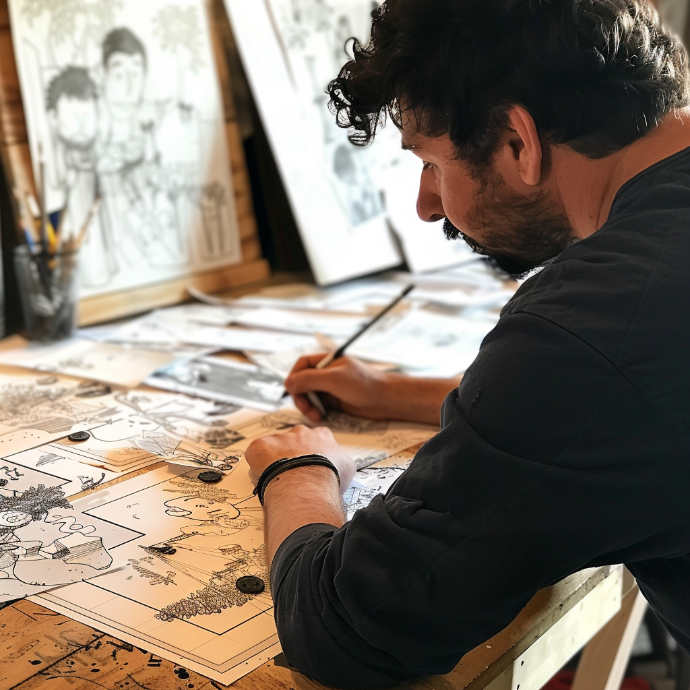

Animation, the art of bringing static images to life through motion, is a fascinating medium that has captured the imagination of audiences worldwide for over a century. But where did it all begin? Who were the pioneers behind this groundbreaking art form? Join me on a journey through the history of animation as we uncover its origins and evolution.
A Journey through History
February 20, 2024
The Early Beginnings
The roots of animation can be traced back to ancient times, where primitive forms of animation were used to depict movement and convey stories. One of the earliest examples of animation can be found in prehistoric cave paintings, where sequential images were painted to create the illusion of motion. Fast forward to the 19th century, and we see the emergence of devices such as the zoetrope and the phenakistoscope, which used spinning disks with sequential images to create the illusion of motion when viewed through slits. These inventions laid the foundation for modern animation techniques.
The Birth of Animation
The true birth of animation as we know it today can be credited to several pioneering individuals who made significant contributions to the art form. One such figure is Émile Cohl, a French artist who created the first animated film, "Fantasmagorie," in 1908. This groundbreaking film featured simple, hand-drawn animations that showcased the possibilities of the medium.
Another key figure in the history of animation is Winsor McCay, an American cartoonist known for his iconic comic strips and animated films. McCay's animated short film "Gertie the Dinosaur" (1914) is considered one of the earliest examples of character animation and demonstrated the potential of animation as a storytelling medium.
Week 1: Github experience, Imagining the internet, History of the web
The History of the Web
Early Beginnings
The World Wide Web (WWW), commonly known as the web, was invented by Tim Berners-Lee, a British scientist, in 1989 while working at CERN (European Organization for Nuclear Research). Berners-Lee’s vision was to create a system that would allow researchers to share and access documents over the internet easily. The initial idea was to solve the problem of information sharing among scientists at different universities and institutes around the world.
In March 1989, Berners-Lee proposed a project based on the concept of “hypertext,” a system of embedding links in text to facilitate non-linear navigation of information. By October 1990, he had laid out the fundamental technologies for the web, including HTML (HyperText Markup Language), HTTP (Hypertext Transfer Protocol), and URLs (Uniform Resource Locators).
Development and Launch
By the end of 1990, Berners-Lee had developed the first web browser and web server, which were introduced to the CERN community. The first website, http://info.cern.ch, went live on August 6, 1991. This site provided information about the World Wide Web project, explaining how to set up a web server and create web pages.
The Web Goes Public
In April 1993, CERN announced that the World Wide Web would be free for anyone to use, with no royalties to be paid. This decision was pivotal in the widespread adoption and growth of the web. The mid-1990s saw a rapid expansion of web usage, with the introduction of more user-friendly browsers like Mosaic in 1993, which later evolved into Netscape Navigator. These browsers made it easier for the general public to access and navigate the web.
The Browser Wars
The late 1990s were marked by intense competition between web browsers, known as the “browser wars.” Netscape Navigator initially dominated the market, but Microsoft’s Internet Explorer, which was bundled with the Windows operating system, soon gained a significant share. This period saw rapid technological advancements and the introduction of new web standards.
The Rise of Web 2.0
The early 2000s saw the emergence of Web 2.0, a term that refers to the second generation of web development and design. Web 2.0 emphasized user-generated content, usability, and interoperability. Key features included blogs, social media platforms, wikis, and video-sharing sites like YouTube. These technologies allowed users to interact and collaborate in ways that were not possible with the static websites of Web 1.0.
Modern Web
Today, the web continues to evolve with advancements in technologies such as HTML5, CSS3, and JavaScript frameworks. The modern web is characterized by responsive design, allowing websites to adapt to different screen sizes and devices, and the increasing use of mobile devices to access the internet. Additionally, the rise of cloud computing and the integration of artificial intelligence and machine learning are shaping the future of web development.
Reflection - Github experience
Although I have added some of my first week experience in the documentation, I will add it here in depth. First, I had to do research on Html about the basics. I started getting familiar with GitHub and its interface. Learning about committing and pushing to origin. Seeing how it works simultaneously with GitHub online. When we started using visual studio code, the platform was unfamiliar to me as I was used to the platform I had used for game development. However, when researching how to create folders and starting the coding basics, I got used to it with time. I had to ensure that my vs code is detected on the GitHub desktop app where my changes are being displayed. When I finally saw that it worked, I would commit it and push to origin. During this process of changing and updating the code, I found that it was better to push to origin as the changes were made so that I can test the code and see if it worked on the actual website. Therefore, with every change…I went and checked the site. Checking the site on the GitHub website became tedious as it takes too long to update. Therefore, my workflow improved with the process of creating the site by checking any progress on the html files in the file explorer instead. When I click on them it redirects me to my pages. This is what I preferred, and I saw my changes much quicker, so I stopped relying on the GitHub website to see that. I noticed that when I make changes, it is best to commit after making the changes on each page as I have named my commits according to each page therefore making it easier to update each page one at a time.
Gillies, J., & Cailliau, R. (2000). How the Web was Born: The Story of the World Wide Web. Oxford University Press.
The Golden Age of Animation
February 27, 2024
The 1920s and 1930s saw the rise of animation studios such as Walt Disney Studios, Warner Bros. Animation, and Fleischer Studios, which produced iconic animated shorts and feature films that captivated audiences worldwide. Disney's "Steamboat Willie" (1928), featuring the debut of Mickey Mouse, marked the beginning of Disney's dominance in the animation industry.During this golden age of animation, innovations such as synchronized sound and Technicolor revolutionized the medium, allowing animators to create more immersive and visually stunning films. Classic animated films such as Disney's "Snow White and the Seven Dwarfs" (1937) and Warner Bros.' "Looney Tunes" shorts became cultural landmarks and inspired generations of animators and filmmakers.
Modern Animation and Beyond
In the decades that followed, animation continued to evolve and diversify, with the advent of new technologies such as computer animation paving the way for groundbreaking films such as Pixar's "Toy Story" (1995), the world's first fully computer-animated feature film.
Today, animation is a thriving industry that encompasses a wide range of styles, techniques, and genres, from traditional hand-drawn animation to cutting-edge 3D animation and beyond. With the rise of streaming platforms and digital distribution channels, animation has become more accessible than ever, allowing creators from around the world to share their stories with global audiences.
Week 2 Content
This is my wireframe concept I created during the week. I have added button functionality as a primary goal to add to my UI due to organising my content into pages that the user can easily access. I am interested in adding a section that will notify the user about the current page being displayed. Followed by a title and descriptions about the purpose of the website such as what I will be discussing in my blogs and my profession. I want the profile content to be on the homepage at the bottom as it is what I have seen on multiple websites. I would like the profile to be one of the first things the user sees to help them get an insight into my skillset in the hopes to persuade them to engage more with the website and to create trustworthiness between me and the user.
As a beginner in web development, Moulthrop's insights provide an understanding of the transformative nature of hypertext and its impact on digital narratives. I noticed that his ideas highlight the importance of embracing interactivity and user-centred design. Hypertext promotes a shift from passive consumption to active participation, letting creators consider how users navigate and experience their digital creations. As I am at the beginning stages of web development, this perspective encourages us to prioritize user engagement and intuitive navigation in our designs.
Basically, the reading is about Moulthrop exploring the concept of hypertext and its implications within the broader context of media and storytelling. It is grounded in Marshall McLuhan's "Laws of Media," which are principles used to analyse the effects of media technologies in society. Moulthrop discusses hypertext as a revolutionary form of narrative structure that challenges traditional storytelling. Hypertext refers to text that is non-linear and interconnected through hyperlinks, allowing readers to navigate through content in non-sequential ways. He examines how hypertext offers new possibilities for user interaction and engagement. He considers how hypertext exemplifies McLuhan's Laws - specifically the principles ‘enhancement’ and ‘obsolescence’, he uses it to explore hypertext to outline its transformative capabilities and the impact it has on storytelling, making traditional linear narratives obsolete. He observed the significance of hypertext as a medium that challenges conventions and opens new possibilities for digital storytelling and user engagement. The reading has made me acknowledge the relationship between technology and narrative as the reading emphasizes the dynamic nature of media shaping our perceptions and experiences.
Animation studios are the heart and soul of the animation industry, where creativity meets technology to bring enchanting worlds to life. Understanding the history and evolution of animation studios provides insight into the remarkable journey of storytelling through animation.
A Journey through Creativity
March 05, 2024
One of the pioneering animation studios, Walt Disney Animation Studios, was founded by Walt Disney and Roy O. Disney in 1923. Their vision revolutionized the animation industry with iconic characters like Mickey Mouse and groundbreaking films such as "Snow White and the Seven Dwarfs."
Another prominent studio, Pixar Animation Studios, was established in 1986 by Edwin Catmull, Steve Jobs, and John Lasseter. Pixar's groundbreaking computer-animated feature film "Toy Story" marked a new era in animation, blending cutting-edge technology with captivating storytelling.
Leading Competitors
Apart from Disney and Pixar, other leading animation studios include DreamWorks Animation, founded in 1994 by Jeffrey Katzenberg, Steven Spielberg, and David Geffen. DreamWorks has produced beloved franchises such as "Shrek," "Kung Fu Panda," and "How to Train Your Dragon."
Additionally, Studio Ghibli, founded by Hayao Miyazaki and Isao Takahata in 1985, has earned global acclaim for its hand-drawn animated films, including "Spirited Away," "My Neighbor Totoro," and "Princess Mononoke."
Reasons for Establishment
Animation studios were created to fulfill various creative and commercial aspirations. Walt Disney envisioned a studio that would produce innovative animated films for audiences of all ages. Pixar aimed to push the boundaries of computer animation and storytelling.
DreamWorks Animation sought to challenge Disney's dominance in the animation industry and cater to a diverse audience with its unique storytelling style. Studio Ghibli was established to preserve the art of hand-drawn animation and create timeless masterpieces.
Conclusion
Animation studios have shaped the landscape of entertainment, inspiring generations with their creativity and innovation. Their contributions continue to influence and redefine the art of animation, captivating audiences worldwide.
Week 3 Content
Interaction is the link between an active body and how it can affect something (Bardin 2013) and interface is a representation of that linking point (Geyser 2023). When analysing the lecture material, it significantly highlights the duty of interaction and how creators must implement strategies within their designs. When something is interactive it is responsive and requires nontrivial effort. Therefore, as I am designing my interface, I am being encouraged to think of designing ways to represent interaction in the system that users will engage with. Ixd refers to interaction design by considering the user experience which is what the user feels during an interaction. User interface is the visual element and interactivity of the website. Information architecture is the organisation and labelling of content to create the website. Creating goals is important throughout the development process by structuring information and deciding on the type of content I want whilst considering what the user wants. Interface elements such as input controls, navigational and informational components may be incorporated to represent the decisions made on the interface. Executing this ensures goal alignments according to the plans made beforehand. When executed properly it ensures that the user interface reflects what it needs to whilst creating an efficient user experience.
Geyser, H. (2023) ‘Designing Interaction’, [Lecture], WSOA3028A: Interactive Media 3A, University of the Witwatersrand
Bardin, R. (2013) ‘Interactivity and the www’ WSOA3028A: Interactive Media 3A, University of the Witwatersrand
The Dynamic Worlds of Traditional and Modern Animation
In the realm of animation, two prominent techniques have dominated the landscape: 2D animation and 3D animation. Both approaches offer unique storytelling possibilities and have carved their own niches in various forms of media. Let's delve into the characteristics, advantages, and differences between these two captivating forms of animation.
2D Animation vs 3D Animation
March 14, 2024
Traditional Charm of 2D Animation:
2D animation, also known as traditional animation, has a rich history dating back to the early days of animation. It involves creating characters and environments using two-dimensional drawings or illustrations. Classic examples of 2D animation include Disney's iconic hand-drawn films like "Snow White and the Seven Dwarfs" and "The Lion King."
Advantages of 2D Animation:
Artistic expression: 2D animation allows for a wide range of artistic styles and techniques, offering a unique visual appeal.
Cost-effective: Compared to 3D animation, 2D animation production can be more budget-friendly, making it accessible for independent filmmakers and smaller studios.
Time-tested: With decades of history, 2D animation techniques have been refined and perfected, resulting in timeless classics beloved by audiences worldwide.
Immersive Realism of 3D Animation:
3D animation, on the other hand, utilizes computer-generated imagery (CGI) to create three-dimensional characters, environments, and visual effects. This modern approach to animation has revolutionized the industry, enabling filmmakers to achieve unprecedented levels of realism and immersion.
Advantages of 3D Animation:
Realistic visuals: 3D animation can create lifelike characters and environments with intricate details, enhancing immersion and storytelling.
Versatility: From animated feature films to video games and architectural visualization, 3D animation finds applications in various industries, offering versatility and adaptability.
Technological advancements: Constant innovations in CGI technology push the boundaries of what's possible in animation, leading to groundbreaking visual experiences.
Comparing 2D and 3D Animation:
While both 2D and 3D animation have their strengths, they cater to different artistic visions and storytelling needs. 2D animation thrives on its artistic charm and timeless appeal, while 3D animation excels in creating immersive, visually stunning worlds.
In conclusion, the debate between 2D animation and 3D animation isn't about one being superior to the other but rather recognizing the unique strengths and creative possibilities each technique offers. Whether it's the nostalgic charm of hand-drawn animation or the cutting-edge realism of CGI, both forms continue to captivate audiences and push the boundaries of imagination.
Week 4 Content
This week we dive deeper into user interface (UI) and user engagement (UX) by understanding how it is implemented, unpacking its differences, laws, and benefits. UX makes interfaces useful whilst helping users accomplish goals and UI makes it visually appealing and readable. The laws of UX include the Von Restorff effect which refers to an object that differs from multiple objects that are presented and is most likely remembered the most. Hicks law refers to the time it takes when making a choice as it depends on the number or complexity of choices present. I see this as the Takealot website, which is the one I have chosen to analyse for the essay. It has a sidebar representing the choices that customers may make if they choose to customize the page according to what they are looking for. For instance, if they only want 5-star rated products, they may click on the 5-star option and all the products under that category will be presented. If the customer is looking for a reasonable product, they may customize the products being displayed by adjusting the price range. Fitts Law refers to the time it takes to acquire a target which depends on the size and distance in which the target is placed. Therefore, the placement is important. An example that I have come up with through personal experience is having the “Add to cart” function at the bottom of the screen in a bold and large button. The button should still be present on the screen even when the user scrolls down to view all the information about the product. It encourages users to take action. Ziegarnik effect refers to users prioritizing uncompleted tasks better than completed ones. The use of progress bars visually represents when a task is incomplete, and I have seen this through my personal experience as well. I was working at a company in 2023, they gave us short modules to complete on an app and there were progress bars indicating an uncompletion or completion of that task. When it is indicated that it is uncomplete, you will be encouraged to finish the task to see the progress bar get full or reach 100%. Another element is incorporating percentages on the progress bars. It makes it more readable to the user as it helps them understand what level the progress bar is on and how much is remaining. If the progress is on 70%, the user knows there is 30% left of the task that needs to be complete. I was intrigued to find out what ‘call to action’ is as I have seen this everywhere on websites. CTA is a piece of content that encourages users to do something. Examples are sign up, subscribe, learn more, join us. I have come across so many “Sign up to our newsletter” commands and that is why I was fascinated when learning what CTA is because I have seen it several times. Then we further learn the principles of design which refers to design elements that will support the user interface as it is imperative that the creator takes the readability, size, location, appearance, scale, balance, alignment and more into account. Regarding the coding, semantic markup encourages programmers to have their code in a more organized fashion. I have made use of this by using articles and section in my code as I have been told through the lecture content that is not recommended to use divs and spans.
Goldberg, Peta: A crash course in User experience + Interface design
Behind the scenes of creating 2D Animations
March 25, 2024
Have you ever wondered how those captivating 2D animations come to life on our screens? The process behind creating 2D animations involves a blend of artistry, technology, and meticulous attention to detail. Let's dive into the behind-the-scenes journey of crafting these enchanting animations.
Conceptualization and Storyboarding
The animation process begins with conceptualization and storyboarding. Artists sketch out the key frames and sequences, outlining the narrative flow and character movements. Storyboarding helps visualize the animation's progression, setting the stage for the next steps in production.

Character Design and Animation
Once the storyboard is approved, character design takes center stage. Artists meticulously craft characters, defining their appearance, expressions, and personalities. Animators then bring these characters to life through frame-by-frame animation, where each movement is carefully drawn and animated to create fluid motion.
Background Art and Layout
Simultaneously, background artists create stunning visuals that complement the characters and scenes. Backgrounds set the atmosphere and provide depth to the animation. Layout artists position characters within these backgrounds, ensuring a cohesive composition.
Coloring and Compositing
After animation, the process moves to coloring and compositing. Colorists add vibrant colors and shading to the characters and backgrounds, enhancing visual appeal. Compositing brings everything together, integrating animation, backgrounds, and effects into cohesive sequences.
Sound Design and Finalization
Sound design is a critical aspect of 2D animation. Sound effects and voiceovers breathe life into the characters and scenes, enriching the viewer's experience. The final touches are added during post-production, ensuring that every frame and sound align seamlessly.
Creating 2D animations is a labor of love that requires collaboration and creativity. From concept to completion, each step contributes to the magic we see on screen.
Week 6 Content
In last week’s blog post, I mentioned how I have decided that I am going to analyse Takealot because we must pick a South African website. Previously, I highlighted a UX law they have incorporated with giving users product customization options. The essay is based on a UX and UI analysis essay, therefore I decided to pick Takealot as I am more familiar with the website. I am also a seller on Takealot, so I understand some of the decisions they have made such as the reason behind the images having white backgrounds. It is a requirement on Takealot to submit pictures with white backgrounds, it cannot be an off-white colour including yellow tones. Otherwise, your product will be rejected. There is a process before a product is approved and it indicates how the company takes its user interface standards seriously. The sponsored advertisements are shown and the deals that they promote are visible. These are additional things that the seller may invest in, but when I analysed the website, I was intrigued to see how it is utilized on the platform. I love how the search engine operates. I think its user experience is great. I felt like analysing this website will help me see its pros and cons and it is a suitable site to observe as it is probably one of the most used apps in the country due to the millions of users that make purchases on it. I found some cons with the text hierarchy they have used. They have brand consistency using the blue colours they have chosen. I found out that the colours have meaning and that they have made some intentional user interface decisions to appear professional and organized. Therefore, I noticed some of the intentional decisions they have made with regards to the user experience and user interface which led to choosing that website.
The world of 3D animation opens up a realm of limitless possibilities, blending artistry with cutting-edge technology. Let's explore the fascinating process behind the scenes of creating 3D animations.
Pre-Production: Concept Development and Modeling
Similar to 2D animations, 3D animation begins with concept development and storyboarding. However, in 3D animation, modeling plays a pivotal role. Artists sculpt digital models of characters, props, and environments using specialized software.
Rigging and Animation
Once models are finalized, rigging comes into play. Rigging involves adding a digital skeleton (or rig) to models, enabling animators to manipulate them realistically. Animators then bring these rigged models to life, animating movements and expressions with precision.
Texturing and Lighting
Texturing breathes life into 3D models, adding surface details, colors, and textures. Lighting artists illuminate scenes, creating mood and atmosphere. The interplay of textures and lighting enhances visual realism.
Rendering and Post-Production
Rendering transforms 3D scenes into final images or sequences. Powerful rendering software calculates light interactions, shadows, and reflections. Post-production involves adding effects, sound, and final touches to polish the animation.
Collaboration and Iteration
Throughout the process, collaboration is key. Teams of artists, animators, modelers, and technical experts work together, refining details and iterating until the animation meets artistic vision and technical standards.
Creating 3D animations is a dynamic process that pushes boundaries and sparks imagination. It's a testament to the fusion of art and technology in the world of animation.
Week 8 Content
The reading by Tataki and Glydos challenges the changes made by the pandemic as it has forced a transition online to e-learning and teleworking making it difficult for the under privileged society. It highlights exactly what we all have had to endure throughout the pandemic. Students having online classes and 40% struggled with no internet access and technology. Schools had to close and educators going through limitations in ensuring learning continuity. Teleworking being incorporated in most companies as remote interaction kept increasing. I have chosen this reading as it relatable because it was the most terrifyingly challenging time as we all had to depend on technology because social distancing was forced upon us. However, this reading is from 2020 which was the year when the pandemic began. In 2024, I have observed how covid has contributed a lot of awareness on the importance of technology. It is extremely useful for us, although it may be detrimental as it continues to gradually take over. However, during that time of desperation to carry on with our lives, continue with our studies, jobs and running companies, we had to come up with solutions. The way that the digital industry has helped pave the way for us and helped throughout that period is remarkable. However, we have implemented technical changes that forced companies to technically evolve. More companies have apps, and an example is wits. We have ‘Ulwazi” which is our online platform for submitting assignments and having access to our lecture material. Many schools are making use of this technique - from primary, secondary, and tertiary levels. I was working at a primary school last year and because I am in the digital industry, one of the teachers discussed how the school is in the process of creating an app for the learners to have their school content posted there and this is due to the rise and pressure of technology. They told me how behind they feel and now they are glad to see the school evolving technically. The use of online meetings increased that now it is normalized to have an MS teams meeting or Zoom meeting. Remote jobs are frequently being advertised and several companies switched to remote working that currently they are still doing that. I believe that the pandemic forced a technological shift that helped speed up its influence, making us depend on it more. It was necessary as it got me more involved in my industry because I started to see how useful it is so the shift was more elevating towards the end of the pandemic when we all got to adjust to the changes.
Tataki, M. & Glydos, D. (2020) Digital Divide Widens. Institute for the Internet and the Just Society.
Week 10 : Close Reading of "The Fourth Industrial Revolution – The Case of South Africa" by Sutherland (2019)
April 24, 2024
The concept of the Fourth Industrial Revolution (4IR) has become an important point of discussion in the context of technological advancements and their socio-economic impacts. In "The Fourth Industrial Revolution – The Case of South Africa," Sutherland (2019) explores the implications of 4IR for South Africa, examining the potential benefits, challenges, and strategies for adaptation. This close reading delves into the critical aspects of Sutherland's analysis, offering insights into the author's arguments, evidence, and conclusions.
To summarise the reading, Sutherland begins by defining the Fourth Industrial Revolution as a period marked by a fusion of technologies blurring the lines between the physical, digital, and biological spheres. The author highlights how 4IR differs from previous industrial revolutions, emphasizing its speed, scale, and complexity. Sutherland asserts that 4IR has the potential to transform industries and societies globally, but also brings significant challenges, particularly for developing nations like South Africa.
One of the central themes and arguments in Sutherland's work is the dual nature of 4IR as both an opportunity and a threat. The author argues that 4IR can drive economic growth, improve efficiency, and foster innovation. However, these benefits are contingent on the country's ability to leverage new technologies effectively. Sutherland points out that without strategic intervention, 4IR could exacerbate existing inequalities and create new forms of digital divides.
Opportunities Presented by 4IR:
Economic Growth: Advanced technologies can boost productivity and create new markets.
Job Creation: While some jobs may be lost to automation, new jobs in tech-driven sectors could emerge.
Improved Public Services: Technologies like artificial intelligence and big data can enhance the efficiency and effectiveness of public services, from healthcare to education.
Sutherland outlines numerous challenges and risks including:
Digital Inequality: Access to technology is uneven, potentially widening the gap between rich and poor.
Skill Mismatch: The workforce may lack the skills needed to thrive in a 4IR economy.
Regulatory and Ethical Issues: Rapid technological change can outpace regulatory frameworks, leading to ethical and legal dilemmas.
As a critical analysis, Sutherland's analysis is thorough, incorporating a range of data and examples to support the arguments. The discussion on digital inequality is particularly compelling, as it highlights a critical issue that could undermine the benefits of 4IR. The author's call for comprehensive education and training programs to address skill mismatches is well-founded, given the rapid pace of technological change.
However, the reading could benefit from a more detailed exploration of specific strategies South Africa could adopt to mitigate the risks associated with 4IR. While Sutherland mentions the need for policy interventions, the recommendations remain somewhat general. A deeper dive into case studies or successful examples from other countries could provide more concrete guidance.
Rendering and Post-Production
In conclusion, Sutherland's "The Fourth Industrial Revolution – The Case of South Africa" offers a nuanced view of 4IR, balancing its transformative potential with the significant challenges it poses. The reading underscores the importance of strategic planning and inclusive policies to ensure that the benefits of 4IR are widely shared. For South Africa, navigating this revolution will require a concerted effort to bridge digital divides, upgrade skills, and develop robust regulatory frameworks. As Sutherland aptly concludes, the future of 4IR in South Africa hinges on the country's ability to adapt and innovate in the face of unprecedented change.
References:
Sutherland, E., 2019. The Fourth Industrial Revolution: The Case of South Africa. South African Journal of International Affairs, 26(2), pp.1-23.
Week 11: Changes Made to Incorporate JavaScript
May 01, 2024
Throughout the development process of my website, several significant changes were made to incorporate JavaScript effectively:
Navigation Buttons: Initially, the navigation buttons on my website were simple HTML links. By adding JavaScript, I transformed them into interactive buttons that dynamically redirect users to different pages. This was achieved by adding event listeners to each button, enhancing the user experience by making the navigation more seamless and interactive.
Read More Functionality: To improve the readability and engagement of my blog posts, I implemented a "Read More" button using JavaScript. This functionality toggles the display of additional content, allowing users to expand and collapse sections of text. This change was crucial for keeping the blog posts concise and user-friendly while giving users control over how much content they want to view.
External Links Handling: I added a JavaScript function to ensure that all external links open in a new tab. This was done by selecting all anchor tags and setting their target attribute to _blank. This change enhances the user experience by preventing users from unintentionally navigating away from my website.
Dynamic Content: JavaScript allowed me to load and manipulate content dynamically. For instance, I added a section on the homepage to display images of my specialties (Animation, Game Development, Web Development, Graphic Design) with descriptions and a "Learn More" button that redirects to the portfolio page. This dynamic approach makes the homepage more interactive and visually appealing.
Streamlining Interaction Design
Incorporating JavaScript has significantly streamlined the interaction design of my website in several ways:
Enhanced Interactivity: By using JavaScript for navigation and content toggling, the website feels more interactive and responsive. Users can navigate between pages and sections without the need for full page reloads, providing a smoother browsing experience.
User Control: The "Read More" functionality empowers users to control the amount of information they see at any given time. This enhances user engagement by allowing visitors to interact with the content based on their preferences, making the website more user centric.
Improved User Experience: Opening external links in new tabs ensures that users do not lose their place on my website. This small yet significant improvement helps maintain user engagement and reduces the frustration of navigating back to the original page.
Dynamic Content Management: The ability to dynamically load and manage content means that the website can adapt to different contexts and user needs more effectively. For example, showcasing my specialties on the homepage with interactive elements helps in highlighting key aspects of my work in a visually appealing manner.
Consistency and Maintainability: By centralizing the button functionalities and other interactive elements within JavaScript, it becomes easier to maintain and update the website. Any changes to the interaction design can be made in the JavaScript code, ensuring consistency across all pages.
In conclusion, incorporating JavaScript into my website has transformed it from a static collection of pages into a dynamic, interactive platform. These changes have not only enhanced the user experience but also streamlined the overall interaction design, making the website more engaging, user-friendly, and easy to maintain. Through JavaScript, I have been able to create a more modern and responsive website that better meets the needs of its users.
Week 11 Reading: Reflection on "Algorithmic Colonization of Africa" by Abeba Birhane (2020)
In Abeba Birhane's "Algorithmic Colonization of Africa," the author delves into the intricate ways in which algorithmic systems and artificial intelligence (AI) perpetuate colonial legacies in the African context. This reflection explores the core arguments presented in the paper, highlights significant insights, and discusses the implications of algorithmic colonization on Africa.
Summary of Key Arguments:
Birhane argues that AI and algorithmic systems, often developed in Western contexts, are not neutral technologies but rather carry inherent biases and assumptions that reflect the socio-cultural environments in which they are created. When these systems are deployed in African contexts, they frequently impose foreign values and norms, disregarding local cultures, needs, and realities. This imposition, termed "algorithmic colonization," mirrors historical forms of colonization where external powers dominated and reshaped local societies to fit their interests.
The paper emphasizes that the data used to train these algorithms often lack diversity and fail to represent the heterogeneity of African societies. Consequently, AI systems may produce skewed outcomes that disadvantage African users. For example, facial recognition technologies have been shown to perform poorly on non-White faces, leading to higher error rates and potential harms when applied in African settings.
Insights and Implications:
One of the interesting insights from Birhane's work is the notion that technology is not inherently emancipatory. While AI holds the promise of driving economic growth and improving services, without careful consideration of its socio-cultural impact, it can exacerbate existing inequalities and reinforce power imbalances. This challenges the often-celebrated narrative that technology is a universal solution to global problems.
Birhane also highlights the importance of context-aware AI development. Technologies need to be designed and adapted with a deep understanding of the local environment, including cultural practices, social norms, and specific needs of the communities. This requires inclusive development processes where local stakeholders are actively involved in the creation and implementation of AI systems.
Reflection
Reflecting on Birhane's arguments, it becomes evident that the discourse around AI needs a critical re-evaluation to address its colonial underpinnings. The rapid deployment of AI in Africa, driven by both local governments and international tech companies, must be scrutinized to ensure it does not replicate the exploitative practices of the past.
One practical step towards mitigating algorithmic colonization is to invest in local AI research and capacity-building. By empowering African researchers and developers, the continent can develop AI systems that are more attuned to its unique challenges and opportunities. Additionally, international collaborations should be restructured to foster equitable partnerships, where knowledge and benefits flow both ways rather than predominantly from the Global North to the Global South.
In conclusion, Birhane's "Algorithmic Colonization of Africa" provides a compelling critique of the current trajectory of AI deployment in Africa. It underscores the need for a paradigm shift towards decolonial AI, where technology serves as a tool for empowerment rather than a means of domination. This reflection not only resonates with the historical experiences of colonization but also offers a forward-looking perspective on building a more just and inclusive technological future for Africa.
References:
Birhane, A., 2020. Algorithmic Colonization of Africa. Scripted, 17(2), pp.389-409.
Week 12: Reflecting on My Development Process
May 08, 2024
How My CSS Relates to the HTML and JavaScript
In the development of my website, CSS, HTML, and JavaScript each play a crucial role in creating a cohesive, interactive, and visually appealing user experience. Here's a reflection on how they interrelate:
HTML Structure: HTML forms the backbone of my website. It provides the semantic structure and the content of the web pages. By using appropriate semantic elements such as section, article, and nav, I ensure that the content is well-organized and accessible. This semantic HTML not only helps in maintaining the structure but also enhances the SEO and accessibility of the website.
CSS Styling: CSS is responsible for the visual presentation of the HTML content. It allows me to define the look and feel of the website, including layout, colors, fonts, and responsiveness. For instance, the styling for the images of my specialties, descriptions, and the "Learn More" button on the homepage is achieved through CSS. By keeping the CSS in a separate file, I ensure that the styling is modular and can be easily maintained or updated without altering the HTML structure.
JavaScript Interactivity: JavaScript brings interactivity to the website. It allows dynamic content updates and enhances user interactions without requiring page reloads. For example, the "Read More" functionality for blog posts and the navigation buttons are implemented using JavaScript. This script enhances the user experience by making the website more interactive and responsive to user actions.
By combining HTML, CSS, and JavaScript, I create a well-structured, visually appealing, and interactive website. Each technology complements the others, ensuring a seamless user experience.
Benefits and Challenges of Responsive Design
Responsive design is essential in today’s web development, given the variety of devices and screen sizes used to access websites. Here are some benefits and challenges I encountered:
Benefits:
Improved User Experience: Responsive design ensures that the website looks and functions well on all devices, from desktops to mobile phones. This enhances the user experience by providing a consistent look and feel, regardless of the device used.
SEO Advantages: Search engines prefer responsive websites because they provide a better user experience. This can lead to improved search engine rankings and increased visibility.
Futureproofing: A responsive design is adaptable to various screen sizes and resolutions, making it future proof for new devices that may enter the market.
Cost Efficiency: Maintaining a single responsive website is more cost-effective than creating separate versions for different devices.
Challenges:
Complexity: Implementing responsive design adds complexity to the development process. It requires careful planning and testing to ensure that the website works well across all devices.
Dynamic Content Management: The ability to dynamically load and manage content means that the website can adapt to different contexts and user needs more effectively. For example, showcasing my specialties on the homepage with interactive elements helps in highlighting key aspects of my work in a visually appealing manner.
Performance: Ensuring that the website loads quickly on all devices can be challenging. Images, CSS, and JavaScript must be optimized to prevent slow loading times, especially on mobile devices.
Cross-Browser Compatibility: Different browsers may render responsive designs differently. Extensive testing is required to ensure compatibility across all major browsers.
Maintenance: Keeping a responsive design up-to-date requires ongoing maintenance and testing to accommodate new devices and browsers.
Decolonialism and My Coding Practice
Decolonialism in coding refers to the awareness and practice of writing code that respects cultural diversity, promotes inclusivity, and avoids perpetuating biases. Reflecting on my own coding practices, here are some considerations:
Inclusive Design: Ensuring that my website is accessible to all users, including those with disabilities, is crucial. This includes using semantic HTML, providing alt text for images, and ensuring that the website is navigable via keyboard.
Avoiding Bias: Being aware of any biases that might be encoded in the functionality or content of the website. For example, ensuring that the language used is inclusive and does not favour any particular group.
Cultural Sensitivity: When creating content or choosing images, it’s important to respect cultural diversity and avoid stereotypes. This includes using diverse imagery and considering the cultural context of the content.
Open Source and Collaboration: Embracing open-source tools and frameworks promotes a collaborative and inclusive approach to development. It allows for contributions from a diverse group of developers, which can help mitigate biases and promote innovation.
Reflective Practice: Continuously reflecting on my coding practices and seeking feedback from a diverse group of users and developers can help identify areas where I may unconsciously perpetuate biases.
In conclusion, incorporating JavaScript, CSS, and HTML effectively into my website development process has been crucial in creating an interactive and visually appealing platform. Embracing responsive design ensures that the website is accessible to all users, regardless of their device. Reflecting on decolonialism in my coding practice has highlighted the importance of inclusivity, cultural sensitivity, and continuous improvement in my development process.
References:
Marcotte, E. (2011). Responsive Web Design. A Book Apart.
W3C. (2018). Web Content Accessibility Guidelines (WCAG) 2.1. Retrieved from https://www.w3.org/TR/WCAG21/
Mohamed, S., Png, M.-T., & Isaac, W. (2020). Decolonial AI: Decolonial Theory as Sociotechnical Foresight in Artificial Intelligence. Philosophy & Technology, 33(4), 659–684. doi:10.1007/s13347-020-00417-2.
Flanagan, M., Howe, D.C., & Nissenbaum, H. (2005). Values at Play: Design Tradeoffs in Socially-Oriented Game Design. Proceedings of the SIGCHI Conference on Human Factors in Computing Systems, pp. 751-760.
Flanagan, M., & Nissenbaum, H. (2007). A Game Design Methodology to Incorporate Social Activist Themes. Proceedings of the SIGCHI Conference on Human Factors in Computing Systems, pp. 181-190.
Week 13: Summary of selected reading. My Reflection of the internet as an ethical space. What does it mean to me? What challenges do we face?
May 16, 2024
Summary of "The Virtual Sphere: The Internet as a Public Sphere" by Zizi Papacharissi (2002)
This reading explores the potential of the internet to serve as a public sphere where democratic discourse can flourish. Papacharissi examines the theoretical foundations of the public sphere concept, initially developed by Jürgen Habermas, and assesses the extent to which the internet fulfills this role. The reading outlines both the promises and limitations of the internet as a medium for democratic engagement and public deliberation.
Papacharissi begins by defining the public sphere as a space where individuals can come together to discuss and identify societal problems, ideally leading to the formation of public opinion. The internet, with its capacity for widespread communication and interaction, theoretically offers a platform for such discourse. Papacharissi highlights several features of the internet that support this role:
Accessibility: The internet can potentially provide access to a wide range of voices and opinions, breaking down traditional barriers to participation.
Diversity: It supports a plurality of viewpoints and topics, catering to varied interests and concerns.
Interactivity: The internet enables immediate feedback and interaction, fostering dynamic discussions.
However, Papacharissi also identifies significant challenges that hinder the internet's effectiveness as a public sphere:
Digital Divide: Not everyone has equal access to the internet, which can exclude marginalized groups and perpetuate existing inequalities.
Commercialization: The influence of commercial interests can shape the content and structure of online spaces, prioritizing profit over public good.
Fragmentation: The vast array of information and the ability for users to self-select content can lead to echo chambers and polarization, rather than fostering inclusive, deliberative discourse.
Papacharissi concludes that while the internet holds potential as a public sphere, realizing this potential requires addressing these challenges. The internet must be structured and regulated in ways that promote inclusive, democratic engagement, ensuring that it serves the public interest rather than commercial or partisan goals.
Reflection on the Internet as an Ethical Space
What does it mean to me?
Viewing the internet as an ethical space involves recognizing it as a platform where moral values and principles guide interactions and content. It means ensuring that online activities promote fairness, respect, inclusivity, and the well-being of all participants. An ethical internet is one where users can trust that their rights and dignity are upheld, and where the digital environment supports constructive and meaningful engagement.
What Would This Look Like?
An ethical internet would exhibit several key characteristics:
Inclusivity: All individuals, regardless of background or socio-economic status, would have access to the internet and the opportunity to participate fully in online discourse.
Respectful Communication: Interactions would be governed by mutual respect, with mechanisms in place to prevent and address harassment, abuse, and misinformation.
Privacy and Security: Users' data and privacy would be protected, and there would be transparency about how information is collected, used, and shared.
Accountability: Platforms and users alike would be held accountable for their actions. There would be clear policies and enforcement mechanisms to address unethical behaviour.
Challenges We Face
Several challenges must be addressed to realize the internet as an ethical space:
Digital Divide: Bridging the gap between those with access to digital technologies and those without is crucial. Efforts must be made to provide affordable and reliable internet access to underserved communities.
Regulation and Governance: Developing and enforcing regulations that balance freedom of expression with the need to prevent harm is complex. This requires cooperation between governments, companies, and civil society.
Commercial Interests: The dominance of profit-driven platforms can undermine ethical principles. There needs to be a shift towards business models that prioritize user welfare and ethical standards.
Misinformation and Polarization: The spread of false information and the tendency towards polarized online communities can erode trust and constructive discourse. Strategies to promote media literacy and critical thinking are essential.
Global Standards: The internet is a global network, and establishing ethical standards that apply across different cultures and legal systems is challenging. International cooperation and dialogue are necessary to develop universally accepted ethical guidelines.
In conclusion, while the internet has the potential to be a moral and ethical space, achieving this requires concerted efforts to address the inherent challenges. By promoting inclusivity, respectful communication, privacy, accountability, and effective regulation, we can work towards an online environment that supports the values of a just and democratic society.
References:
Papacharissi, Z. (2002). The Virtual Sphere: The Internet as a Public Sphere. New Media & Society, 4(1), 9-27.
Habermas, J. (1989). The Structural Transformation of the Public Sphere: An Inquiry into a Category of Bourgeois Society. MIT Press.
Dahlberg, L. (2001). The Internet and Democratic Discourse: Exploring the Prospects of Online Deliberative Forums Extending the Public Sphere. Information, Communication & Society, 4(4), 615-633.
Fuchs, C. (2009). Information and Communication Technologies and Society: A Contribution to the Critique of the Political Economy of the Internet. European Journal of Communication, 24(1), 69-87.
Dutton, W. H. (2009). The Fifth Estate: Democratic Social Accountability through the New Media. Intermedia, 37(6), 16-23.
Sunstein, C. R. (2017). #Republic: Divided Democracy in the Age of Social Media. Princeton University Press.